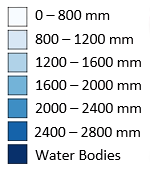

<!DOCTYPE html>
<html>
<head>
	
	<title>Evapotranspiration en 2019</title>
	
	<link rel="shortcut icon" type="image/x-icon" href="images/logo3.png" />

	<link rel="stylesheet" href="leaflet.css" />
	<script src="leaflet.js"></script>
	<script src="for.js"></script>
	<script src="evapo.js"></script>
	<script type="text/javascript" src="mapfr.js"></script>

	<style>

	    .titre {
           padding: 6px 8px;
           font: 20px/16px Arial, Helvetica, sans-serif;
           background: white;
           background: rgba(255,255,255,0.9);
           box-shadow: 0 0 15px rgba(0,0,0,0.2);
           border-radius: 100px
}

        .titre h4 {
           margin: 0 0 5px;
           color: #777;
} 
		#map {
			width: 600px;
			height: 400px;
		}
		.info {
		    padding: 6px 8px;
		    font: 14px/16px Arial, Helvetica, sans-serif;
		    background: white;
		    background: rgba(255,255,255,0.8);
		    box-shadow: 0 0 15px rgba(0,0,0,0.2);
		    border-radius: 5px;
		}
		.info h4 {
		    margin: 0 0 5px;
		    color: #777;
		}
	</style>

	
</head>
<body>


<script type="text/javascript" src="mapfr.js"></script>

<div id="mapid" style="width: 1550px; height: 800px;"></div>

<script>

	var map = L.map('mapid').setView([28.539006, 7.886224], 5);

	L.tileLayer('https://{s}.tile.openstreetmap.org/{z}/{x}/{y}.png', {
	    attribution: '&copy; <a href="https://www.openstreetmap.org/copyright">OpenStreetMap</a> contributors'
	}).addTo(map);
	var geojson2 = L.geoJson(pay, {
		style: Monstyle2,
}).addTo(map);

	
	
	///////////////////////////////////////////////////////////////////////
	// get color depending on population density value
	function getColor(ggggg) {
		return ggggg === "WaterBodies" ? '#084594' :
			   ggggg === "800 - 1200 mm" ? '#c6dbef' :
			   ggggg === "1200 - 1600 mm" ? '#9ecae1' :
			   ggggg === "1600 - 2000 mm" ? '#6baed6' :
			   ggggg === "2000 - 2400 mm" ? '#4292c6' :
 							'#2171b5';
	}
	
	function Monstyle2(feature) {
		return {
			weight: 2,
			opacity: 1,
			color: 'Black',
			dashArray: '3',
			fillOpacity: 0,
			
		};
	}

	function Monstyle(feature) {
		return {
			weight: 0,
			opacity: 1.0,
			color: 'white',
			dashArray: '3',
			fillOpacity: 0.9,
			fillColor: getColor(feature.properties.CLASS)
		};
	}

	function highlightFeature(e) {
	    var layer = e.target;
	    layer.setStyle({
	        weight: 2,
			opacity: 0.5,
	        color: '#666',
	        dashArray: '',
	        fillOpacity: 1.0
	    });

	    if (!L.Browser.ie && !L.Browser.opera && !L.Browser.edge) {
	        layer.bringToFront();
	    }
	        info.update(layer.feature.properties);
        
	}

	function resetHighlight(e) {
    	geojson.resetStyle(e.target);
    	    info.update();

	}
	function zoomToFeature(e) {
    map.fitBounds(e.target.getBounds());
}
	function onEachFeature(feature, layer) {
    layer.on({
        mouseover: highlightFeature,
        mouseout: resetHighlight,
        click: zoomToFeature
    });
}
var info = L.control();

info.onAdd = function (map) {
    this._div = L.DomUtil.create('div', 'info'); // create a div with a class "info"
    this.update();
    return this._div;
};
var titre = L.control();


titre.onAdd = function (map) {
  var divTitre = L.DomUtil.create('div', 'titre'); 
  divTitre.innerHTML = "<h4>Evapotranspiration en 2019</h4>";
  return divTitre;
};

titre.addTo(map);
// method that we will use to update the control based on feature properties passed
info.update = function (props) {
    this._div.innerHTML = '<h4>evapotranspiration en 2019 (mm)</h4>' +  (props ?
        'Entre : <b>' + props.CLASS + '</sup>'
        : 'Merci de mettre le cursuer sur une zone');
};

info.addTo(map);

	var geojson = L.geoJson(eva, {
		style: Monstyle,
	    onEachFeature: onEachFeature,
}).addTo(map);

////////////////////////////////////////////////////////////////////////circleMarker
	


   var legend = L.control({position: 'bottomleft'});
  
  


   

legend.onAdd = function (map) {
 var divLeg = L.DomUtil.create('div', 'info legend');
 divLeg.innerHTML +='Evapotranspiration (mm) <br>  <br>  Source : EFFIS ';
 return divLeg;
}; 

legend.addTo(map);


L.control.scale().addTo(map);

    

     

        // var overlayMaps = {
        //     "geojson": geojson,
        //  };

        // //var control = L.control.layers(baseMaps, overlayMaps)
        // var control = L.control.selectLayers(  overlayMaps)
        // control.addTo(map);


</script>

</body>
</html>
